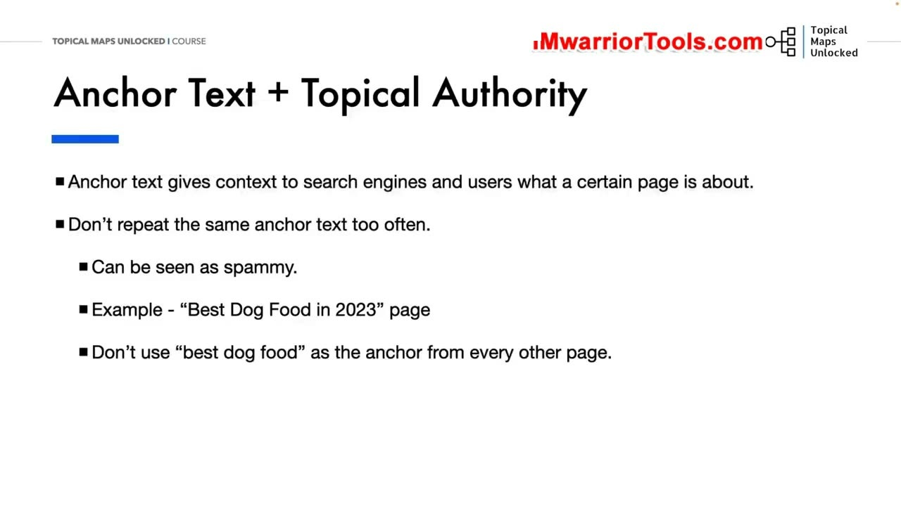
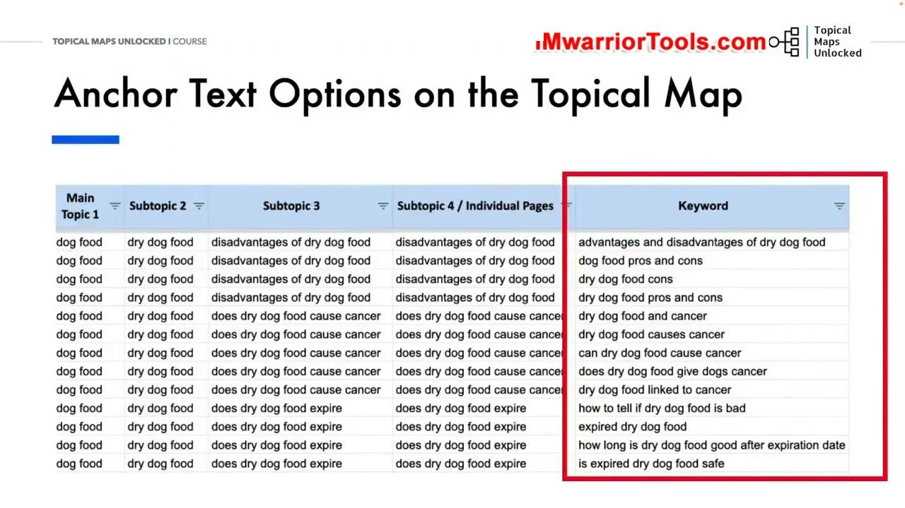
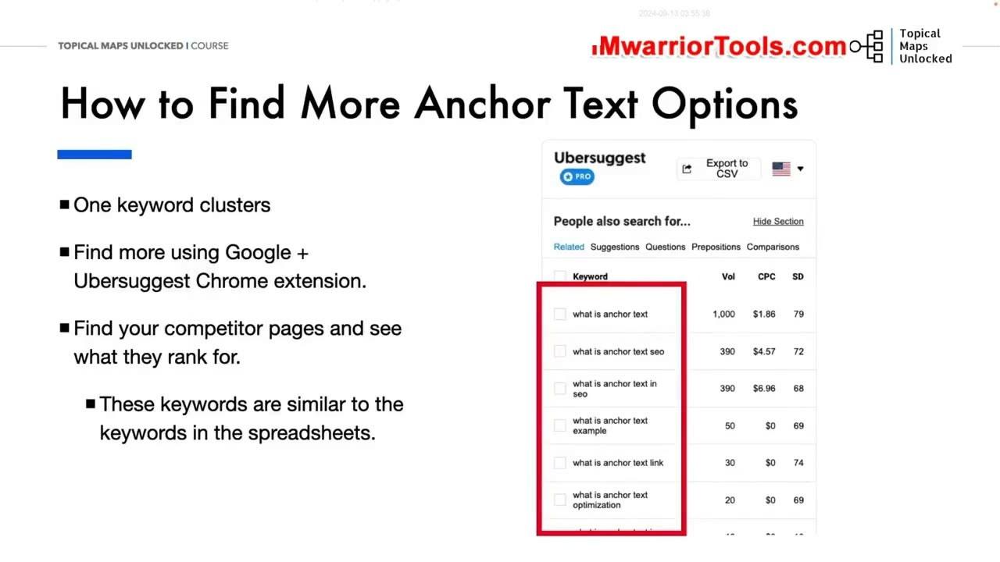

Topical Map and Anchor Text
1. Vai trò tối thượng của Neo văn bản (Anchor Text) đối với Topical Authority
Trong bài học thứ năm, Yoyao phân tích chi tiết về Anchor Text (Neo văn bản liên kết) - một trong những tín hiệu mạnh mẽ nhất định hình cách Google hiểu nội dung của trang đích.
Neo văn bản chính là đoạn chữ có thể nhấp chuột được chứa siêu liên kết. Nó cho công cụ tìm kiếm và người dùng biết chính xác trang web đích sắp mở ra sẽ bàn về vấn đề gì.
Tuy nhiên, Yoyao đưa ra lời cảnh báo nghiêm khắc: Tuyệt đối không lặp lại một từ khóa neo văn bản giống hệt nhau quá nhiều lần! Nếu bạn có 50 bài viết và tất cả 50 bài viết đó đều sử dụng đúng cụm từ chính xác "thức ăn cho chó tốt nhất" để trỏ về trang trụ cột, thuật toán Google sẽ lập tức đánh giá đó là hành vi thao túng liên kết thiếu tự nhiên (Over-optimization / Spam) và có thể kích hoạt các hình phạt thuật toán.
Thay vào đó, một hồ sơ neo văn bản tự nhiên phải bao gồm sự pha trộn cân bằng giữa các từ khóa mục tiêu, từ khóa biến thể và các cụm từ ngữ cảnh thông thường.

2. Khai thác các phương án Anchor Text đa dạng trực tiếp từ bảng tính Topical Map
Làm thế nào để vừa tối ưu SEO vừa giữ cho hồ sơ neo văn bản hoàn toàn tự nhiên? Câu trả lời nằm ngay trên Bảng tính Topical Map của bạn!
Khi bạn nghiên cứu một cụm từ khóa, một bài viết Subtopic 4 thường có hàng chục biến thể từ khóa phụ ngữ nghĩa (Keywords) nằm trong cùng một nhóm:
- Thay vì bài nào cũng dùng một neo từ khóa chính, bạn hãy luân phiên sử dụng các từ khóa biến thể trong bảng tính để làm neo văn bản cho các bài viết khác nhau trỏ về trang đó.
- Ví dụ, để trỏ về bài viết về ung thư ở chó, bạn có thể luân chuyển giữa các neo: "mối liên hệ giữa thức ăn khô và bệnh ung thư", "thức ăn cho chó có thể gây ung thư không", "nguy cơ ung thư từ thức ăn hạt kém chất lượng"...
- Kết hợp đan xen với các neo văn bản tự nhiên (Generic anchor text) như "xem phân tích chi tiết tại đây, theo báo cáo này, tìm hiểu thêm" để tạo nên một bức tranh liên kết đa dạng và chân thực 100% trong mắt Google.
Cách tiếp cận này không chỉ giúp bạn an toàn trước các thuật toán chống spam liên kết mà còn giúp bài viết có khả năng xếp hạng cho hàng trăm từ khóa đuôi dài khác nhau.

3. Mở rộng biến thể Anchor Text bằng tiện ích Ubersuggest Chrome Extension
Để tìm kiếm thêm nhiều phương án neo văn bản phong phú mà không tốn công suy nghĩ, Yoyao hướng dẫn sử dụng tiện ích mở rộng Ubersuggest Chrome Extension trực tiếp trên trình duyệt:
- Bạn gõ từ khóa mục tiêu lên thanh tìm kiếm Google (ví dụ: "what is anchor text").
- Tại khung kết quả tìm kiếm, bảng tiện ích Ubersuggest sẽ tự động hiển thị danh sách các từ khóa liên quan (Related keywords) và các câu hỏi được người dùng tìm kiếm nhiều nhất (People also search for).
- Bạn cũng có thể xem xét trực tiếp các trang của đối thủ hàng đầu xem họ đang có thứ hạng cho những từ khóa nào khác.
Sao chép các biến thể từ khóa tự nhiên này vào cột kế hoạch liên kết của bạn. Nhờ vậy, bài viết của bạn sẽ sở hữu một hệ thống neo văn bản vừa phong phú, vừa bám sát ngôn ngữ thực tế của người dùng, giúp bài viết thăng hạng hàng loạt từ khóa liên quan chỉ sau một thời gian ngắn.
Sự kết hợp giữa dữ liệu có sẵn trên Topical Map và các phát hiện thời gian thực từ công cụ hỗ trợ sẽ giúp bạn xây dựng một chiến lược neo văn bản bất khả chiến bại.

Nguồn và đối chiếu
- Topical Maps Unlocked 2.0 · 05-Topical Map and Anchor Text (Video bài học chính).
- Bản tiếng Anh không có video riêng cho bài học này; nội dung đối chiếu trực tiếp từ slide và video chính.